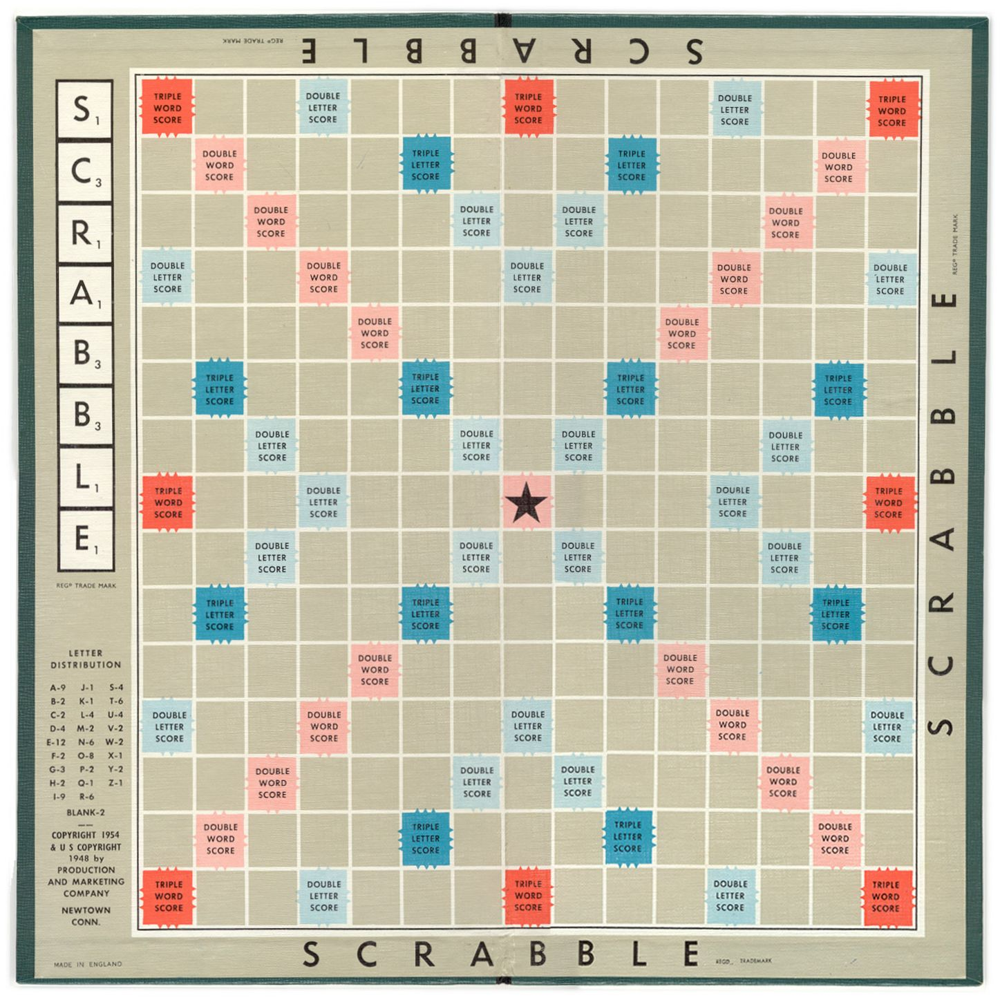

About
Thoughtful engineering.
Dependable results.
I’m a software engineer who enjoys solving complex problems and making dependable systems easier to build, release, and maintain.
I currently work as a Computer Scientist for the U.S. Air Force, developing and maintaining software for aircraft simulation and testing. Working in a disciplined engineering environment has taught me to value quality, reliability, and clear collaboration.
Beyond work, I learn through books and hands-on projects. I also enjoy hiking, playing guitar, and cooking.
C/C++
Java
Python
Cloud & DevOps
Azure
AWS
Kubernetes
CI/CD
Computer Scientist
- Built, packaged, and released software for simulation and testing environments, while maintaining aircraft simulation infrastructure and providing technical support.
- Administered ClearCase on Linux and Windows, managing branches, labels, views, and permissions; wrote Perl scripts to automate configuration management workflows.
- Investigated and resolved software defects to improve application stability and support successful releases.
- Used Azure DevOps for version control, work tracking, and code reviews to support collaboration and maintain code quality.
Math Tutor
- Helped students work through pre-calculus problems and strengthen their math skills.
- Explained mathematical concepts in accessible ways and adapted support to students’ needs.
- Monitored student progress and engagement throughout tutoring sessions.
Selected work
Projects
A selection of applications and experiments I’ve built.

Cloud application · Multi-cloud
Built a Flask daily check-in dashboard that lets users share a timestamped “I am safe” update with a trusted contact.
- Created a Google Cloud version with an automated Cloud Build workflow.
- Developed an AWS version with Cognito sign-in, DynamoDB storage, and an EKS deployment pipeline.
FlaskGoogle CloudAWSDockerKubernetes

Cloud application
Built a highly available Flask application on AWS with EC2, Nginx, a load balancer, and an Auto Scaling group.
- Automated deployments with CodePipeline and CodeDeploy.
- Configured Route 53, CloudFront, and ACM for secure HTTPS access and improved reliability.
AWSEC2NginxCloudFront

Interactive game · Web application
Built a browser-based Scrabble game where players create valid words by dragging letter tiles onto the board.
- Implemented dictionary-based word validation, tile values, and premium letter and word squares.
- Added blank tiles, a seven-tile bonus, tile exchange, and controls to reset or restart a game.
JavaScriptjQueryjQuery UIHTMLCSS

Web application
Developed an online bookstore where customers can browse and purchase books while administrators manage the catalog.
- Built a database-connected dashboard to add, update, and remove book records.
- Used Java Servlets to retrieve and display book data dynamically.
JavaJavaFXSQLServlets

Game development
Created an interactive game where players move through a level and respond to dynamically moving enemies.
- Applied object-oriented programming to create modular, maintainable game logic.
JavaJavaFXOOP

Machine learning
Analyzed transaction data and compared machine-learning models to identify fraudulent activity.
- Prepared and cleaned data, then evaluated Decision Tree, Logistic Regression, and Neural Network models.
PythonMachine LearningData Analysis